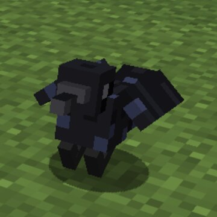

Farming
The soil
Farmland has a fertility from 0 to 10; fresh farmland is 6. Every harvest takes some out, and the same crop again and again takes more each time.
Poor soil grows slowly; rich soil fast, and it gives a bigger harvest. Hold a hoe and look at farmland:
In gameSoil · Tired ●●●○○ · Wheat 3 harvests running: rotate!
Rotating crops
Each harvest takes from the soil:
So rotate: follow hungry crops with beans. Soil left resting regains a point a day, up to 8.
Compost
Fill a compost bin with garden waste. Full, it rots for half a day; turning it hurries it on:
Compost feeds soil +3, manure +2. Trough-fed animals leave manure; it rots in the bin too.
The farming year
● good ◐ okay ○ poor
Out of season crops grow slowly; glass keeps the seasons off.
Getting through winter
Out in the winter cold you freeze in a couple of minutes: faster at night, faster still in a blizzard.
First you shiver, then your hands go numb, then frostbite bites. A fire, leather, woollens and hot food keep it off.
Winter days
Midwinter days are short and the nights long; in summer it's the other way round.
Out in the cold you get hungry faster. Carry food.
A room with no fire gets cold on a winter night.
Water
Summer sun dries open fields. Sneak with a shovel on dirt to dig a ditch: it carries water 8 along to the fields.
Fill the can at water; each use soaks 3x3.
Crows
On fine days crows raid fields of ripening crops, pecking them back. Walk out and they fly.

No crow lands within 8 blocks of a scarecrow. Give it a carved pumpkin for a head.
Fruit trees
Apple, pear, plum, cherry, peach and orange trees grow wild, each where it likes: oranges and peaches where it's warm.
Their leaves drop saplings now and then. Plant one in the sun, or hurry it with bone meal.
Apple varieties
Apple trees come in many kinds. Each has its own sapling, and its leaves drop saplings of the same kind.
Wild apple trees can be any kind: look out for them in meadows and woods.
In the orchard
Red, Granny Smith, Golden Delicious, Cox's Orange Pippin, Russet; Crab, Bramley, Arkansas Black, Pink Pearl.
Just for looks: every kind bears ordinary apples.
Picking fruit
Right-click a leaf hung with ripe fruit to pick it. Cherries ripen first, oranges last: through the winter.
Unpicked fruit withers at season's end. A picked leaf rests till it blossoms again.
Deer love apples: hold one and they'll let you near.
Warm-country trees
Lemons, mandarins, olives and avocados: evergreen trees whose fruit hangs from the branches.
Wild ones are old giants: lemons and olives in dry hills, mandarins and avocados in the jungle.
Living trees
Plant one and it keeps growing: a taller trunk, new limbs, a fuller crown, until it's orchard-sized.
The fruit hangs below the leaves, green at first. Pick it when it's ripe.
Bone meal on the heartwood at its foot helps it on. It rests in winter.
Bees and blossom
Blossom only turns to fruit if it's pollinated. Bees fly to trees in bloom; with a hive near the orchard, every flower sets.
Without bees, wind and wild insects pollinate only about half.
Keep a beehive within 16 blocks of your trees.
The fruit press
Fruit in the press is squeezed into its vat: three fruit a bottle (six cherries), four bottles at most.
Stand a long glass bottle under the spout and it fills.
Apple, pear or haskap juice left a day turns to cider, perry or haskap wine.